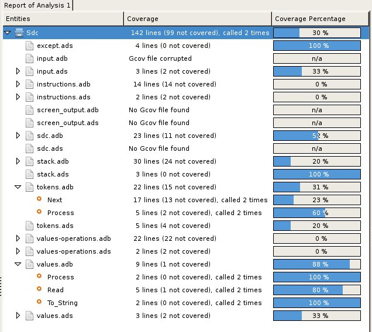
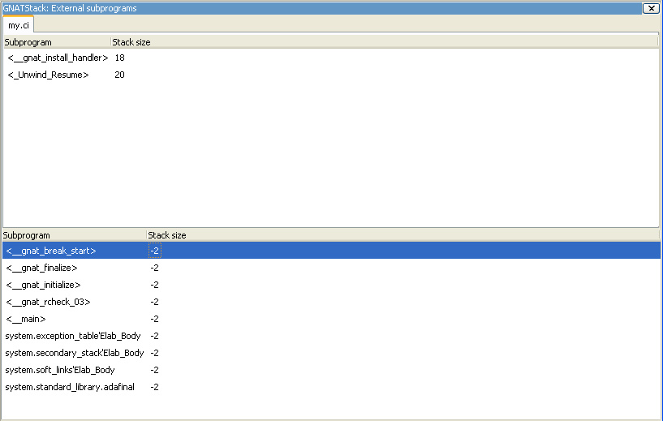

The Coding Standard menu allows you to edit your coding standard file, as can be understood by gnatcheck, as well as run it against your code, to verifiy its compliance with this coding standard.
Note that you can also use the contextual menu to check the conformance of a particular project or source file against a Coding Standard.
The Coding standard editor is triggered by the menu Tools->Coding Standard->Edit Rules File. The editor allows you to select an existing coding standard file, or create a new one. The editor adapts itself to the version of gnatcheck you are using on your local machine.
The currently used rules are summarized in the bottom of the editor. Once all rules are defined, you can check the box ‘Open rules file after exit’ to manually verify the created file.
Once the Coding Standard file is created, you can define it as the default coding standard file for a project by going to the project editor, selecting the ‘Switches’ tab, and using this file in the ‘Gnatcheck’ section.
The visual comparison, available either from the VCS menus or from the Tools menu, provide a way to display graphically differences between two or three files, or two different versions of the same file.
The 2-file comparison tool is based on the standard text command diff, available on all Unix systems. Under Windows, a default implementation is provided with GPS, called gnudiff.exe. You may want to provide an alternate implementation by e.g. installing a set of Unix tools such as cygwin (http://www.cygwin.com).
The 3-file comparison tool is based on the text command diff3, available on all Unix systems. Under Windows, this tool is not shipped with GPS. It is available as part of cygwin, for example.
When querying a visual comparison in GPS, in Side_By_Side mode, the user area will show, side by side, editors for the files involved in the comparison. The reference file is placed by default on the left side. When in Unified mode, GPS will not open a new editor, but will show all the changes directly in the original editor. Note that Unified mode is relevant only when comparing two files: when comparing three files, the Side_By_Side mode is used.
Color highlighting will be added to the file editors:
These colors can be configured, The Preferences Dialog.
As with all highlighted lines in GPS, the visual differences highlights are visible in the Speed Column at the left of the editors.
Blank lines are also added in the editors, in places that correspond to existing lines in the other editors. The vertical and horizontal scrolling are synchronized between all editors involved in a visual comparison.
When a visual comparison is created, the Locations View is populated with the entries for each chunk of differences, and can be used to navigate between those.
Closing one of the editors involved in a visual comparison removes the highlighting, blank lines, and scrolling in the other editors.
Editors involved in a visual comparison have a contextual menu Visual diff that contains the following entries:

GPS provides an interactive way to fix or improve your source code, based on messages (errors and warnings) generated by the GNAT compiler.
This capability is integrated with the Locations View (see The Locations View): when GPS can take advantage of a compiler message, an icon is added on the left side of the line.
For a simple fix, a wrench icon is displayed. If you click with the left button on this icon, the code will be fixed automatically, and you will see the change in the corresponding source editor. An example of a simple fix, is the addition of a missing semicolon.
You can also check what action will be performed by clicking on the right button which will display a contextual menu with a text explaining the action that will be performed. Similarly, if you display the contextual menu anywhere else on the message line, a sub menu called Auto Fix gives you access to the same information. In the previous example of a missing semicolon, the menu will contain an entry labelled Add expected string ”;”. Two nested menu items let you choose to Apply to this occurrence or Apply to all similar errors. Latter choice will apply the same simple fix for all errors which are detected by the system as being the same kind. This is based on message parsing.
Once the code change has been performed, the tool icon is no longer displayed.
For more complex fixes, where more than one change is possible, a wrench icon with a blue plus sign is displayed. In this case, clicking on the icon will display the contextual menu directly, giving you access to the possible choices. For example, this will be the case when an ambiguity is reported by the compiler for resolving an entity.
Right clicking on a message with a fix will open a contextual menu with an entry “Auto Fix”. Fixes that can be applied by clicking on the wrench are available through that menu as well. In addiditon, if one of the fixes is considered to be safe by GPS, additional entries will be provided to apply fixes on multiple messages:
GPS provides a documentation generator which processes source files and generates annotated HTML files.
It is based on the source cross-reference information (e.g. generated by GNAT for Ada files). This means that you should ensure that cross-reference information has been generated before generating the documentation. It also relies on standard comments that it extracts from the source code. Note that unlike other similar tools, no macro needs to be put in your comments. The engine in charge of extracting them coupled with the cross-reference engine gives GPS all the flexibility needed to generate accurate documentation.
The documentation is put by default into a directory called doc, created under the object directory of the root project loaded in GPS. If no such object directory exists, then it is directly created in the same directory as the root project. This behavior can be modified by specifying the attribute Documentation_Dir in the package IDE of your root project:
project P is
package IDE is
for Documentation_Dir use "html";
end IDE;
end P;
Once the documentation is generated, the main documentation file is loaded in your default browser.
The documentation generator uses a set of templates files to control the final rendering. This means that you can control precisely the rendering of the generated documentation. The templates used for generating the documentation can be found under <install_dir>/share/gps/docgen2. If you need a different layout as the proposed one, you can change directly those files.
In addition, user-defined structured comments can be used to improve the generated documentation. The structured comments use xml-like tags. To define your own set of tags, please refer to the GPS python extension documentation (from GPS Help menu, choose ‘Python extensions’).
The string values inside those tags are handled very roughly the same way as in regular xml: duplicated spaces and line returns are ignored. One exception is that the layout is preserved in the following cases:
Some default tags have been already defined by GPS in <install_dir>/share/gps/plug-ins/docgen_base_tags.py. The tags handled are:
The following sample shows how those tags are translated:
-- <description>
-- This is the main description for this package. It can contain a complete
-- description with some xml characters as < or >.
-- </description>
-- <group>Group1</group>
-- <c_version>1.0.0</c_version>
package Pkg is
procedure Test (Param : Integer);
-- <summary>Test procedure with a single parameter</summary>
-- <parameter name="Param">An Integer</parameter>
-- <exception>No exception</exception>
-- <seealso>Test2</seealso>
procedure Test2 (Param1 : Integer; Param2 : Natural);
-- <summary>Test procedure with two parameters</summary>
-- <parameter name="Param1">An Integer</parameter>
-- <parameter name="Param2">A Natural</parameter>
-- <exception>System.Assertions.Assert_Failure if Param1 < 0</exception>
-- <seealso>Test</seealso>
end Pkg;
Its documentation will be:
The documentation generator can be invoked from the Tools->Documentation menu:
In addition, when relevant (depending on the context), right-clicking with your mouse will show a Documentation contextual menu.
From a source file contextual menu, you have one option called Generate for <filename>, that will generate documentation for this file and if needed its corresponding body (The Preferences Dialog).
From a project contextual menu (The Project View), you will have the choice between generating documentation for all files from the selected project only or from the selected project recursively.
You will find the list of all documentation options in The Preferences Dialog.
Note that the documentation generator relies on the ALI files created by GNAT. Depending on the version of GNAT used, the following restrictions may or may not apply:
GPS relies on gnattest tool that creates unit-test stubs as well as a test driver infrastructure (harness). Harness can be generated for project hierarchy, single project or a package. Generation process can be launched from Tools->GNATtest menu or from contextual menu.
After generation of harness project GPS will switch to it, allowing you to implement tests, compile and run the harness. At any moment you can exit harness project and return to original project.
Gnattest’s behaviour could be configured through project properties. GNATtest page in (The Project Properties Editor) gives you convenient access to these properties.
GPS provides an interface with the GNAT software metrics generation tool gnatmetric.
The metrics can be computed for the one source file, for the current project, or for the current project and its imported subprojects
The metrics generator can be invoked either from the Tools->Metrics menu or from the contextual menu.
When relevant (depending on the context), right-clicking with your mouse will show metrics-related contextual menu entries.
From a source file contextual menu, you have an option called Metrics for file that will generate the metrics for the current file.
From a project contextual menu (The Project View), you have an option Metrics for project that will generate the metrics for all files in the project.
After having computed metrics, a new window in the left-side area is displayed showing the computed metrics as a hierarchical tree view. The metrics are arranged by files, and then by scopes inside the files in a nested fashion. Double-clicking on any of the files or scopes displayed will open the appropriate source location in the editor. Any errors encountered during metrics computation will be displayed in the Locations Window.
GPS provides a tight integration with Gcov, the GNU code coverage utility.
Code coverage information can be computed from, loaded and visualized in GPS. This can be done file by file, for each files of the current project, project by project (in case of dependencies) or for the entire project hierarchy currently used in GPS.
Once computed then loaded, the coverage information is summarized in a graphical report (shaped as a tree-view with percentage bars for each item) and used to decorate source code through mechanisms such as line highlighting or coverage annotations.
All the coverage related operations are reachable via the Tools->Coverage menu.
In order to be loaded in GPS, the coverage information need to be computed before, using the Tools->Coverage->Gcov->Compute coverage files menu for instance.
At each attempt, GPS automatically tries to load the needed information and reports errors for missing or corrupted .gcov files.
To be able to produce coverage information from Gcov, your project must have been compiled with the -fprofile-arcs and -ftest-coverage” switches, respectively “Instrument arcs” and “Code coverage” entries in The Project Properties Editor, and run once.
When clicking on a project, file or subprogram entity (including the entities listed in the coverage report), you have access to a Coverage submenu.
This submenu contains the following entries, adapted to the entity selected. For instance, if you click on a file, you will have:
When coverage information is loaded, a graphical coverage report is displayed. This report contains a tree of Projects, Files and Subprograms with corresponding coverage information for each node in sided columns.
The contextual menus generated on this widget contain, in addition to the regular entries, some specific Coverage Report entries.
These entries allow you to expand or fold the tree, and also to display flat lists of files or subprograms instead of the tree. A flat list of file will look like:

GPS and Gcov both support many different programming languages, and so code coverage features are available in GPS for many languages. But, note that subprogram coverage details are not available for every supported languages.
Note also that if you change the current main project in GPS, using the Project->Open menu for instance, you will also drop every loaded coverage information as they are related to the working project.
GPS provides an interface to GNATstack, the static stack analysis tool. This interface is enabled only if you have the gnatstack executable installed on your system and available on the path.
Stack usage information can be computed from, loaded and visualized in GPS for the entire project hierarchy used in GPS. Stack usage information for unknown and unbounded calls can be edited in GPS.
Once computed and loaded, the stack usage information is summarized in a report, and used to decorate source code through stack usage annotations. The largest stack usage path is filled into the The Locations View.
Stack usage information for undefined subprograms can be specified by adding a .ci file to the set of GNATStack switches in the Switches attribute of the Stack package of your root project, e.g:
project P is
package Stack is
for Switches use ("my.ci");
end Stack;
end P;
You can also specify this information by using the GNATStack page of the Switches section in the The Project Properties Editor. Several files can be specified.
The Stack Usage Editor can be used to edit stack usage information for undefined subprograms.
When clicking on a project, file or subprogram entity (including the entities listed in the coverage report), you have access to a Stack Analysis submenu.
This submenu contains the following entries, related to the entity selected:
When the stack usage information is loaded, a report is displayed containing a summary of the stack analysis.
The Stack Usage Editor allows to specify stack usage for undefined subprograms and use these values to refine results of future analysis.
The Stack Usage Editor consists of two main areas. The notebook in the top area allows to select the file to edit. It displays the contents of the file and allows changing the stack usage of subprograms. The table in the bottom area displays all subprograms whose stack usage information is not specified so that they can be set.
Stack usage information for subprograms can be specified or changed by clicking in the stack usage column on the right of the subprogram’s name. When a value is specified in the bottom area table, the subprogram is moved to the top table of the currently selected file. When a negative value is specified, the subprogram is moved to the bottom table.
All changes are saved when the stack usage editor window is closed.